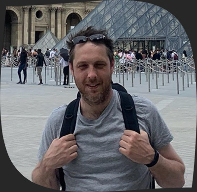
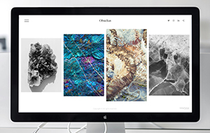
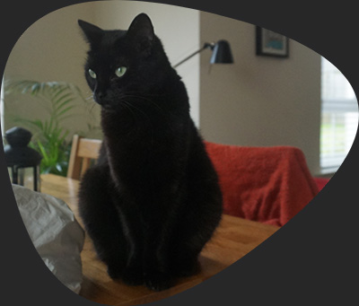

Mission and purpose
I created this website as a personal project to practice and refine my HTML, CSS, and JavaScript skills. It's a bit of a laboratory, a space where I can experiment with new techniques, document what I’m learning, and challenge myself to try things outside my comfort zone. Throughout the development process, I’m aiming to improve my coding abilities while also having fun with design and interactivity.
As a result, this site serves as something of a digital portfolio, showcasing my progress and helping me build a stronger foundation for future projects. It’s also a place for me to track my growth as a developer, learning from my successes and mistakes along the way.

I'm Nick.
I live in Ballygowan, in beautiful County Down, Northern Ireland.
I’ve spent the last eleven years working in software testing,
focusing on commercial and public-sector projects.
Before that, I studied English and Creative Writing,
which led to writing screenplays and plays - some of which have
even been performed at top Belfast venues like the Lyric Theatre,
Grand Opera House, MAC Theatre, and Crescent Arts Centre.
Learning
I’m currently exploring front-end development (HTML, CSS, and JavaScript), alongside web design and tools in the Adobe Creative Suite like Photoshop and Illustrator. I'm also developing my automation testing skills with Selenium, Playwright and even Cucumber, using Python, JavaScript, and TypeScript. This is part of a larger goal to build a strong GitHub portfolio.
You can check out my skills page here. Over the next few months, I'll be continuously enhancing and expanding this section to showcase my evolving abilities. As I learn and grow, I’ll be adding new skills, tools, and technologies that I’m mastering, along with details of the projects I’ve worked on.

Web Design
Website and graphic design.
Coding skills
HTML, CSS, JavaScript, Typescript and Python.
Automation
Playwright, Selenium and Cucumber.
Outside of work, I’m kept busy with travelling, gardening, writing, exercise and online gaming. I’m happily married, and we share our home with Eva, our 10-year-old black cat. She's a good girl, albeit a bit of a grump.
I have Ankylosing Spondylitis, but it doesn’t hold me back. Whether diving into new tech, working on or scriptwriting or mastering the cryptic art of lawn maintenance, I’m always pushing forward.

Adventures
My wife and I have travelled extensively in recent years, with several trips to France, Spain, Mallorca, Italy, Portugal and a four (crazy!) road trips through the USA. Each destination has offered new experiences, with opportunities to explore diverse landscapes, cultures, and histories. From the wild coastlines of Northern California, to the beautiful, historical canals of Venice, we've tried to make the most of our time together.
We're both really excited for our upcoming trip to Japan, somewhere we've always wanted to go. We'll kick things off in Tokyo, then travel by Shinkansen to Kyoto, followed by a stop in Hiroshima, and finally return to Tokyo. It’s shaping up to be our most epic adventure yet!
I take a lot of pictures. Thousands of them. Clicking on the pins on the map below will open small galleries featuring some of the most memorable photos and places from our previous trips.